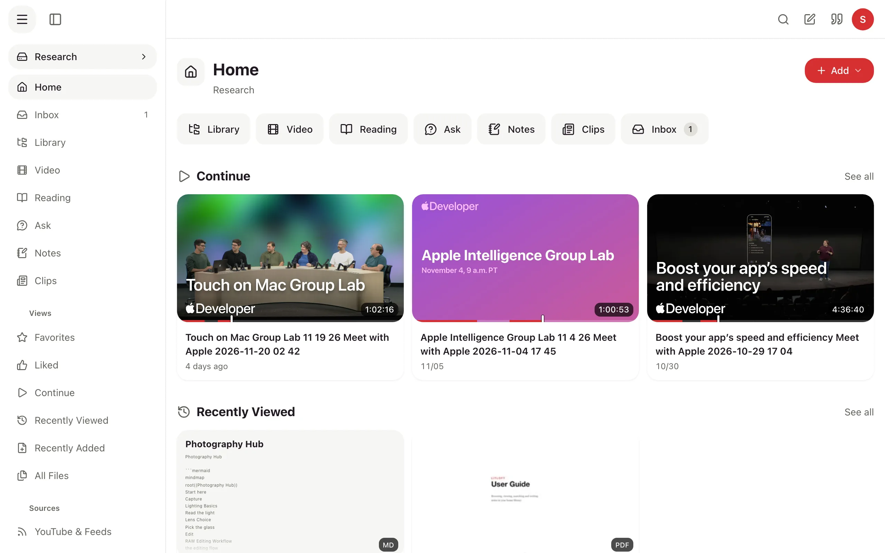
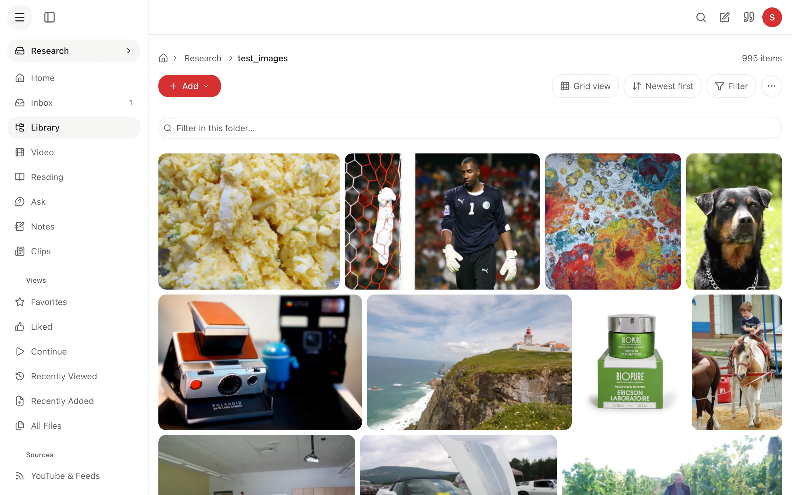
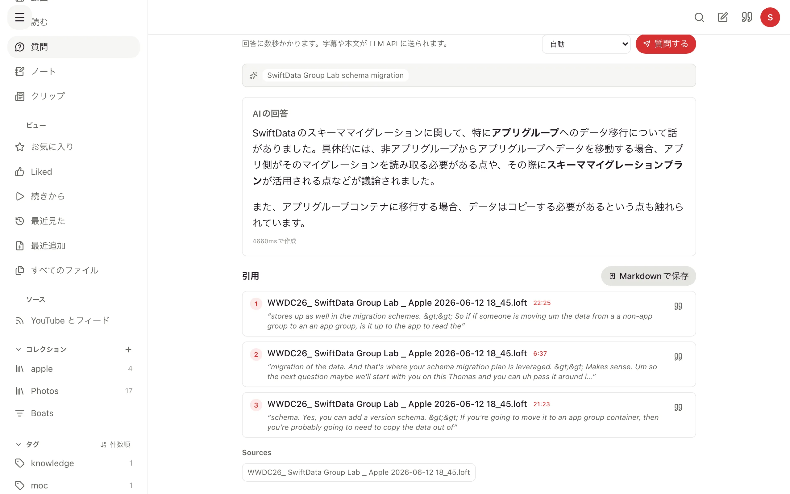
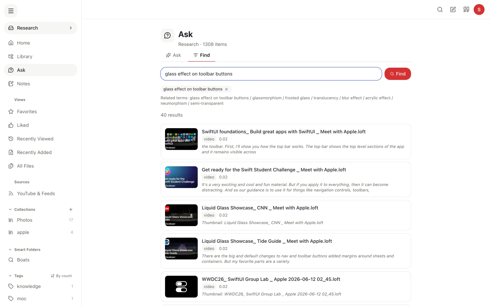
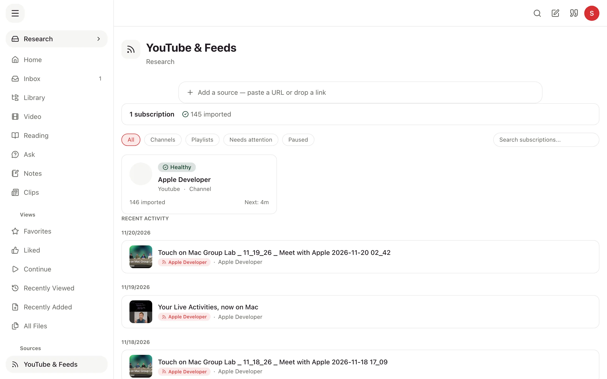
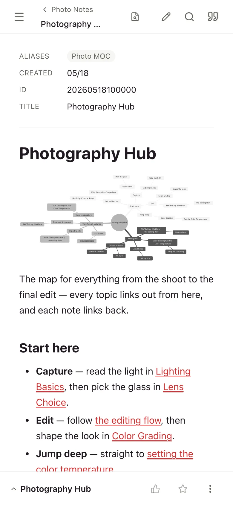

「動画」と「読む」ページ
ドライブごとに、動画のページと、PDF・EPUB・書庫のページを用意しました。「発見」には「続きを見る」「新着」と、Intelligenceアドオンがあれば「おすすめ」を表示。「ライブラリ」ではフォルダをたどり、名前・タグ・視聴状況で絞り込めます。分類と並び順は対象ごとに記憶します。
Litloftは、動画・音声・PDF・画像・Markdownノートを自宅LANで管理できる、セルフホスト型のメディアライブラリです。ブラウザでの再生・閲覧に加え、文字起こしや文書の本文も検索できます。資料に関するメモも、同じフォルダに保存できます。
Docker Compose自宅LAN専用LLM連携は任意・ローカル推奨AGPL-3.0

0.8と0.9では、動画と本のための専用ページ、アプリ全体で使える保存済み検索、ファイルの内容を検索・閲覧する手段を追加しました。主な変更点をご紹介します。
ドライブごとに、動画のページと、PDF・EPUB・書庫のページを用意しました。「発見」には「続きを見る」「新着」と、Intelligenceアドオンがあれば「おすすめ」を表示。「ライブラリ」ではフォルダをたどり、名前・タグ・視聴状況で絞り込めます。分類と並び順は対象ごとに記憶します。
検索条件をスマートコレクションとして保存できます。in: で検索に使ったり、「動画」「読む」ページの対象にしたり、ホームのショートカットに置いたりできます。コレクションは順に再生でき、Intelligenceアドオンがあれば内容について質問もできます。
tag:旅行 -tag:2023 のように、- で除外できます。has:tag、has:collection、modified: を追加し、サイズや長さと組み合わせられます。「＋ 条件」メニューから、書式を入力せずに追加できます。
文字起こし・シーン・詳細要約・ノートを、プレーヤーの下に2つまで並べて開けます。広い画面ではプレーヤーの横にも配置可能です。フォーカスモードでは、ヘッダーとサイドバーを隠してファイルとパネルを広く表示します。
シークバーの上の帯と、カードのバーで、動画のどの部分を見たかを表示します。ボタンまたは P で、よく再生した箇所に移動できます。
PDF・Markdownノート・テキストファイルでは、選択した文字にハイライトを残せます。WordとExcelのファイルは、ページ内で読み取り専用の文書と、シートタブ付きの表として開きます。
スクリーンショット、スライド、動画のフレーム、スキャンしたPDFのページに写った文字を読み取り、検索できるようにします。読み取り結果は修正でき、元の結果も保持されるため、いつでも戻せます。
ファイルの画面で ⌘F を押すと、発話・画面内の文字・PDFのページ・本文から、語句が出てくる箇所をすべて一覧にします。画像を貼り付けるかドロップすると、似た画像や動画のシーン、画像内の文字を含む文書を探せます。
画像を読めるモデルを使う場合、動画についての質問ではフレームも数枚送ります。必要に応じて、モデルが別の場面を追加で確認します。ファイルへの質問は、続けて追加の質問もできます。
登録したフォルダのファイルを、同じLAN内のスマートフォン・タブレット・PCからブラウザで再生できます。動画は前回の続きから再生でき、プレーヤーの横でチャプターやタイムスタンプ付きの文字起こしを確認できます。
.loft ファイルに保存し、埋め込みプレーヤーで再生
文書も動画と共通のレイアウトで閲覧できます。PDFは「ページ」タブでサムネイルを確認でき、全画面ではページめくり表示で読めます。写真フォルダでは、各写真の縦横比を保って一覧表示します。


Findでは、ファイル名やタグに加え、文字起こし、文書の本文、画像の内容をまとめて検索できます。Askは関連する箇所をLLMで処理し、出典番号付きで回答します。引用から元のファイルや該当する再生位置を確認できます。
tag:・in:・modified: などの検索演算子に対応。検索条件はスマートコレクションとして保存可能Askと要約では、設定したLLMに該当箇所を送信します。Ollamaなどでローカルモデルを使う場合、この処理は手元のPCやサーバー内で完結します。検索と文字起こしは、LLMを設定せずに利用できます。


ノートはドライブ内にMarkdownファイルとして保存され、Obsidianなどのエディタでも開けます。Litloftでは [[wikiリンク]] でノート同士を関連付けたり、引用した動画や文書へのリンクを追加したりできます。


YouTubeやVimeoのURLを登録すると、タイトル・サムネイル・字幕を保存できます。チャンネルやプレイリストの購読にも対応しています。動画は元のサイトの埋め込みプレーヤーで再生し、字幕はローカルファイルと同様に検索やAskに利用できます。

すべての画面がスマートフォンでの表示に対応しています。ホーム画面に追加すると、独立したウィンドウで利用できます。ソースコードからビルドできるiOSアプリでは、画面ロック中の音声再生や、動画のピクチャ・イン・ピクチャも利用できます。


ファイルを移動せずに既存のフォルダから読み込み、検索に必要な情報はローカルのSQLiteに保存します。
.md 形式、外部サイトから取り込んだ動画情報は .loft 形式で保存sqlite-vec に保存Browser ──▶ :3000 Next.js ──/api/*──▶ :8000 FastAPI + SQLite + ffmpeg
├─ intelligence search, Ask, transcripts (own container)
├─ knowledge notes, clips, versions (own container)
├─ media_import YouTube & feeds (in the backend)
└─ cloud-sync rclone backups (in the backend)
基本機能としてファイルの閲覧・再生とファイル名での検索に対応し、ファイルの内容の検索やノートなどの機能をアドオンで追加できます。各アドオンは独立したリポジトリで管理され、ドライブごとに利用を設定できます。
文字起こし、意味に基づく検索、シーン・画像検索、画像や動画内の文字の読み取り、出典付きのAsk、要約、タグ・チャプター候補の提案に対応。LLMにはOllama、またはOpenAI互換APIを利用できます。
Markdownのライブプレビュー編集、変更履歴、ノートの閲覧、Webクリップ、引用バスケットに対応。ノートやファイルの関連をグラフで確認できます。
YouTubeやVimeoのURLを .loft ファイルとして保存。チャンネル・プレイリストの購読、字幕の取り込み、取り込み履歴の確認に対応しています。
rcloneを利用してドライブを定期的にバックアップします。保存先はS3、Backblaze B2、Googleドライブなど、rcloneが対応するサービスから選べます。
Webアプリをベースに、iOSの再生機能を利用できるアプリです。ios/ をXcodeでビルドして利用します。バックグラウンド再生、ロック画面からの操作、ピクチャ・イン・ピクチャ、AirPlayに対応しています。App Storeでの配布は行っていません。
Claude DesktopなどのMCPクライアントから、LitloftのAPIを通じてファイルの検索・閲覧・タグ付け・名前の変更・移動・編集、PDF・Office・EPUBの本文の読み取り、動画のシーン検索ができます。ブラウザでの利用時と同じアクセス制限が適用されます。
Git、Docker（Compose v2）、Python 3と、約5GBの空き容量が必要です。その他の実行環境はコンテナ内に用意されます。
アドオンはGitのサブモジュールとして管理されています。以下のコマンドで、本体とあわせて取得します。
configure.py を実行する画面の案内に沿って、Dockerの起動に必要な設定を行います。各項目でEnterキーを押すと、既定値が選択されます。
LLM_API_KEY の入力は任意です。ローカルモデルを使用する場合は空欄にできます。docker-compose.override.yml と .env を作成します。既存のファイルがある場合は、上書きするかどうかを確認します。
configure.py の設定完了後に、そのままコンテナを起動できます。初回のビルドには数分かかります。
configure.py に表示されたアドレス（http://localhost:3000/setup?token=… など）を開きます。画面の案内に沿って、ドライブの表示名、パスワード、アクセスグループ、利用するアドオンを設定します。設定内容は後から /admin/settings で変更できます。
要約、タグ・チャプター候補の提案、Askを利用するには、LLMの設定が必要です。検索と文字起こしは、LLMを設定せずに利用できます。プロバイダとモデルは、初期設定後にブラウザから選択します。
ローカルモデルを利用する場合は、ホスト側にOllamaをインストールし、モデルをダウンロードします。LLMによる処理は、手元のPCやサーバー内で完結します。OpenAI互換APIを利用する場合は、APIキーを .env に設定します。この場合、インデックス作成時や質問時に、ファイルの本文が設定先のAPIへ送信されます。
iPhone・iPadで利用するためのHTTPS設定など、詳しい手順はインストールガイド（英語）をご覧ください。
Litloftは、自宅での利用を目的に開発している個人プロジェクトです。不具合の報告や改善の提案は、GitHubのIssue・プルリクエストで受け付けています。サポートは対応可能な範囲で行います。
自宅LAN内、またはVPN経由での利用を想定しています。認証機能は最小限のため、インターネットへの直接公開は推奨していません。
ユーザーアカウント機能はありません。プロフィールには、ブラウザで設定したニックネームを使用します。
Plexのようなトランスコード機能や、オンラインデータベースからのメタデータ取得には対応していません。
ブラウザ・アプリともに、利用にはサーバーへの接続が必要です。オフラインでの閲覧・再生には対応していません。
LitloftはAGPL-3.0ライセンスのオープンソースソフトウェアです。ソースコードと導入手順をGitHubで公開しています。